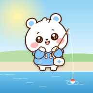

まるふわの いりぐち
「まるふわ」は、まるい ほっぺの こたち。ブラウザの ちいさな まちと、iPhone の そだてるゲームと、LINE スタンプと、アクスタに でてくるよ。すきな ところから どうぞ。
ちいさな まちを あるく
「まるふわ びより」まるふわと なかまの まち・むりょう・ログインなし
TikTok@marufuwa_no_machi・まるふわと ノアの どうが・まいにち 19じ
LINE スタンプ「まるふわマスコット」40こ いり ¥190・LINE ストアへ
はいしん・どうがで つかう かたへむりょうの そざい あり・つかいかた
BOOTHそざい・はいしんの どうぐ・むりょう〜¥800・BOOTH へ
きょうの まるいろ1にち 1かいの ブラウザの パズル・むりょう
iPhone アプリ「まるふわまるいろ」みみの いろで きもちが わかる こ・むりょう・App Store へ
3もんで わかる「まるふわ いろ しんだん」きょうの きもちを みみの いろで・むりょう
itch.io（English）えいごの ページ・あそぶのは むりょう
X（@hozumi_ao_）まるふわの え と おしらせ
アクスタ「まるふわと ねこ」50mm・BOOTH へ ¥1,800 ＋そうりょう ¥400
アクスタ「ノアと まるふわ」70mm・BOOTH へ ¥2,600 ＋そうりょう ¥400
アクスタ「月城ノア 立ち絵」70mm・BOOTH へ ¥2,600 ＋そうりょう ¥400
TikTok・LINE・BOOTH・アプリ・itch.io・X・アクスタ は、そとの ページが ひらくよ。ひらく まえに きくよ。